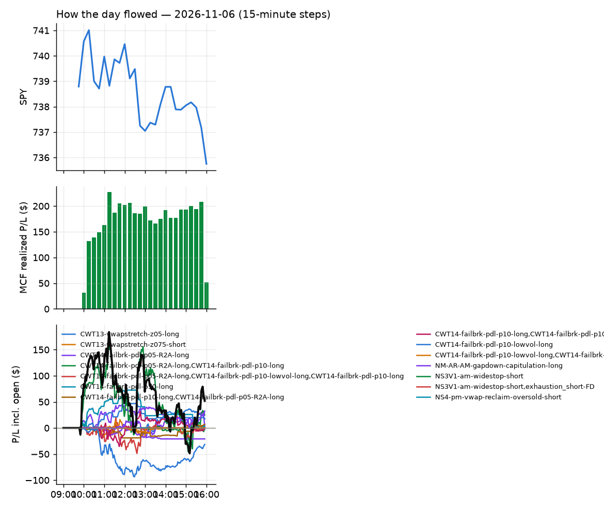
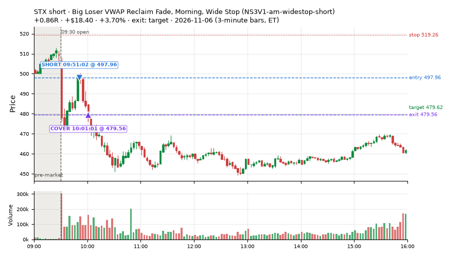
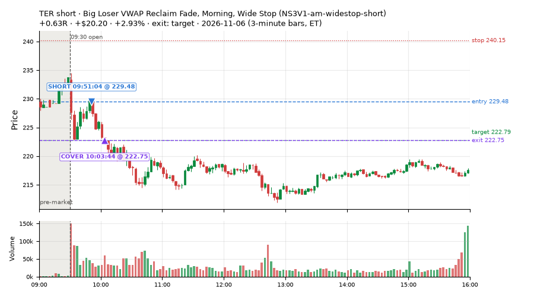
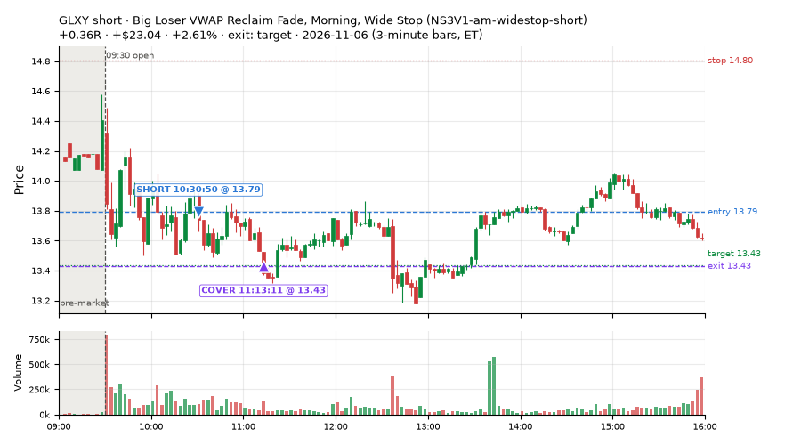
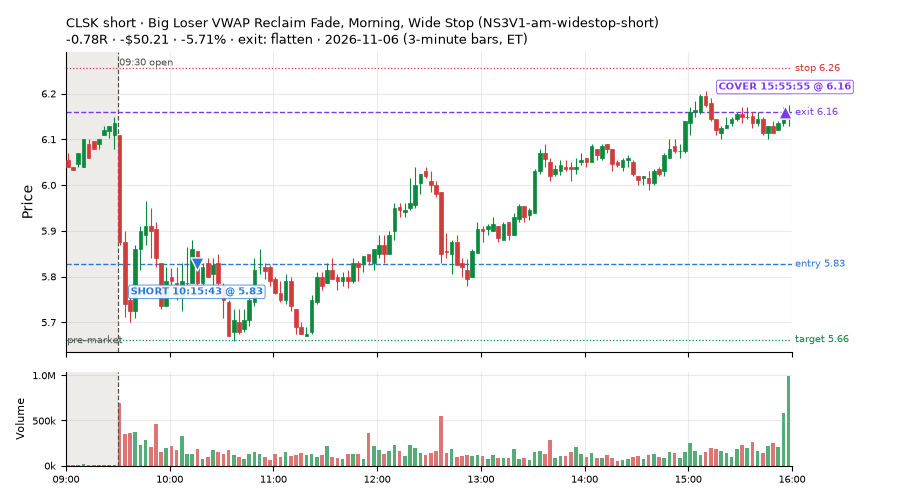
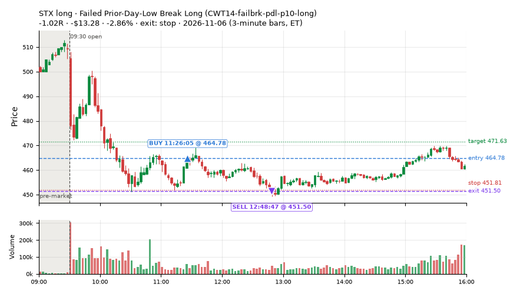
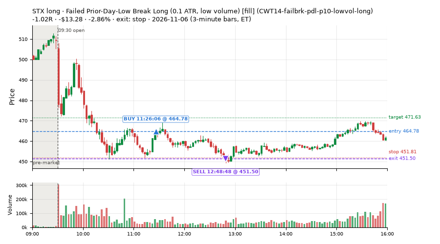
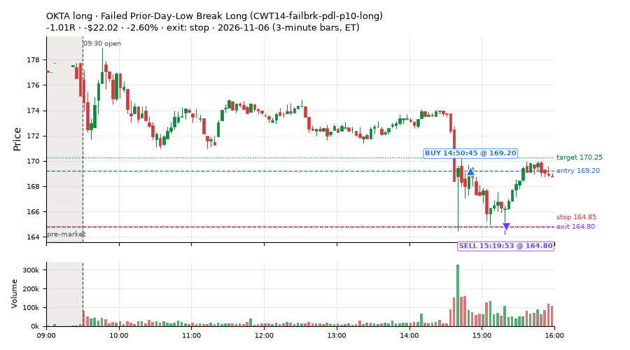
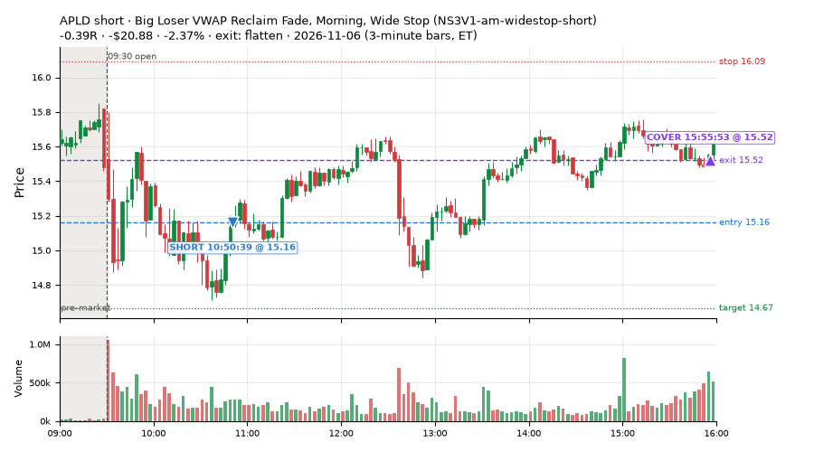

165 trades · win rate 61% · P/L $51.95
PROBATION: no live setup has passed both locked test periods. 10 owner-directed setups added 2026-10-08 (MarcoFlow top 5 + 5 new), untested live. RW6G1 (RW6 + VWAP band guard) added 2026-10-09, probation.

| Symbol | Setup | Side | In | Out | Entry | Exit | Exit reason | % gained | P/L |
|---|---|---|---|---|---|---|---|---|---|
| STX | Big Loser VWAP Reclaim Fade, Morning, Wide Stop (NS3V1-am-widestop-short) | short | 09:51 | 10:01 | 497.96 | 479.56 | target | +3.70% | $18.40 |
| TER | Big Loser VWAP Reclaim Fade, Morning, Wide Stop (NS3V1-am-widestop-short) | short | 09:51 | 10:03 | 229.48 | 222.75 | target | +2.93% | $20.20 |
| GLXY | Big Loser VWAP Reclaim Fade, Morning, Wide Stop (NS3V1-am-widestop-short) | short | 10:30 | 11:13 | 13.79 | 13.43 | target | +2.61% | $23.04 |
| Symbol | Setup | Side | In | Out | Entry | Exit | Exit reason | % lost | P/L |
|---|---|---|---|---|---|---|---|---|---|
| CLSK | NS3V1-am-widestop-short | short | 10:15 | 15:55 | 5.83 | 6.16 | flatten | -5.71% | $-50.21 |
| STX | CWT14-failbrk-pdl-p10-long | long | 11:26 | 12:48 | 464.78 | 451.50 | stop | -2.86% | $-13.28 |
| STX | CWT14-failbrk-pdl-p10-lowvol-long | long | 11:26 | 12:48 | 464.78 | 451.50 | stop | -2.86% | $-13.28 |
| OKTA | CWT14-failbrk-pdl-p10-long | long | 14:50 | 15:19 | 169.20 | 164.80 | stop | -2.60% | $-22.02 |
| APLD | NS3V1-am-widestop-short | short | 10:50 | 15:55 | 15.16 | 15.52 | flatten | -2.37% | $-20.88 |








Signal to fill: median 2s, 90th percentile 3s (165 trades). Bars close each minute; the order follows the bar close.
Best excursion (MFE): median 0.36R; worst (MAE) median 0.33R. 39% of trades never got +0.25R in our favour; 0 reached +1R and still closed at or below 0.
| Symbol | Setup | Best R | Worst R | Closed R |
|---|---|---|---|---|
| LNG | RW3S-gapdn-flowsell-short-FD | +0.79 | -1.04 | -1.00 |
| CNC | NM-AR-AM-gapdown-capitulation-long | +0.71 | -1.01 | -1.01 |
| EAT | RW3S-gapdn-flowsell-short-FD | +0.62 | -1.00 | -1.08 |
| ISRG | CWT14-failbrk-pdl-p10-long | +0.33 | -1.09 | -1.24 |
| ANF | CWT13-vwapstretch-z05-long | +0.48 | -1.05 | -1.06 |
| Entry time | Trades | Win | Avg R | P/L |
|---|---|---|---|---|
| 09:50-10:30 | 52 | 77% | +0.03 | $61.38 |
| 10:30-11:30 | 81 | 53% | -0.05 | $-14.68 |
| 11:30-13:00 | 10 | 40% | -0.17 | $-12.71 |
| 13:00-14:00 | 12 | 75% | +0.33 | $41.76 |
| 14:00-16:00 | 10 | 40% | -0.11 | $-23.80 |
| Setup | Trades | Win | Avg R | Adj R (net of SPY) | Avg R ex-market (all sessions) | P/L |
|---|---|---|---|---|---|---|
| Stretched Below VWAP Bounce (CWT13-vwapstretch-z05-long) | 5.0 | 80% | +0.26 | +0.20 | +0.02 (beta +1.41, n 260) | $17.30 |
| Stretched Above VWAP Fade (far) (CWT13-vwapstretch-z075-short) | 1.0 | 100% | +0.61 | -0.30 | -0.03 (beta -0.31, n 25) | $2.28 |
| Failed Prior-Day-Low Break, SPY-Range Regime (long leg) (CWT14-failbrk-pdl-p05-R2A-long) | 34.0 | 65% | -0.02 | +0.02 | +0.02 (beta +0.47, n 110) | $3.18 |
| Failed Prior-Day-Low Break Long (CWT14-failbrk-pdl-p10-long) | 36.0 | 67% | -0.01 | +0.03 | -0.07 (beta +1.39, n 530) | $-3.39 |
| Failed Prior-Day-Low Break Long (0.1 ATR, low volume) [fill] (CWT14-failbrk-pdl-p10-lowvol-long) | 24.0 | 75% | +0.11 | +0.06 | -0.05 (beta +1.67, n 221) | $18.08 |
| Gap-Down Capitulation Buy (near-miss) (NM-AR-AM-gapdown-capitulation-long) | 2.0 | 0% | -1.00 | -0.72 | -0.33 (beta +1.73, n 50) | $-20.98 |
| Big Loser VWAP Reclaim Fade, Morning, Wide Stop (NS3V1-am-widestop-short) | 16.0 | 50% | +0.10 | -0.01 | -0.36 (beta -0.33, n 42) | $24.63 |
| Afternoon VWAP Reclaim Fade (NS4-pm-vwap-reclaim-oversold-short) owner-directed; holdouts once: Sep-Oct -0.086R n49, Apr-Jun -0.080R n342 | 1.0 | 100% | +0.73 | +0.19 | +0.05 (beta -0.42, n 10) | $3.10 |
| Gap-Down Bounce Short, Heavy Selling (all day) (RW1-gapdn-bounce-flowsell-short-FD) | 8.0 | 50% | -0.04 | -0.26 | -0.01 (beta -1.52, n 67) | $6.76 |
| Gap-Down Heavy-Selling Short, no RSI condition (all day) (RW3S-gapdn-flowsell-short-FD) | 29.0 | 41% | -0.21 | -0.42 | -0.26 (beta -1.46, n 140) | $-31.59 |
| exhaustion_short-FD | 9.0 | 67% | +0.11 | -0.09 | -0.30 (beta -1.87, n 79) | $32.58 |
Market direction (SPY, beta 1) accounted for $85.21 of today's $51.95; the rest ($-33.26) came from the setups themselves. Avg R net of SPY: -0.08 (incl. a hedge leg's cost; report only).
15 setups live today. Today: 278 signals, 165 taken, 4 lost because another setup held the symbol (1%). Since 2026-10-12 (20 sessions): 9565 signals, 4813 taken, 707 lost to other setups (7%). Peak open positions today 72 of 400 slots. Earnings blackout removed 1528 symbols before scanning.
Simulated playing time (not live): 4735 what-if trades of signals not taken, avg -0.08R, 58% winners; of them 707 lost to another setup (avg -0.20R).
Silent: LD4-st4-breadthup-t1s05-long, LD8-spy-dip030-breadthturn-spxl-holdtr-long, LD1-ns1-breadthup-t05s1-long, CWT04-backside-lh-a25-short, CWT04-backside-vwaptest-a25-short · Crowded out: MF5-flowsell-vwapup-rsi5hi, CWT14-failbrk-pdl-p05-R2A-short, NS3-failed-vwap-reclaim-short-FD · Starved: exhaustion_short-FD, NS5-sma50-flush-oversold-long-FD, RW4-ns3-adv150-short-FD, MF2-open-rsimidhi-flowsell
| Prio | Setup | Today sig / taken | Sessions | Signals / taken / trades | Taken/day | Expected/day | Lost to other setups | Lost to (setup n) | Top skip reasons | SIMULATED: not-taken n / avg R / win | Verdict |
|---|---|---|---|---|---|---|---|---|---|---|---|
| 1 | Big Loser VWAP Reclaim Fade, Morning, Wide Stop NS3V1-am-widestop-short | 28 / 16 | 11 | 85 / 42 / 42 | 3.82 | 5.30 | 3 | NS3V1-am-widestop-short 3, NM-RWR3-ns3-qqqup-early-short 1, NM-RWN3-ns3-spyup-early-short 1 | spread / quote / size 21, not shortable / shorts off 19, symbol held by another setup 3 | 43 / -0.06R / 56% | ok 19.1 entries/week |
| 2 | Gap-Down Capitulation Buy (near-miss) NM-AR-AM-gapdown-capitulation-long | 2 / 2 | 15 | 78 / 50 / 50 | 3.33 | – | 0 | – | spread / quote / size 27, other 1 | 28 / -0.17R / 43% | ok 16.7 entries/week |
| 3 | Afternoon Higher-Low Long (near-miss) NM-HL-T75-pm-long | 0 / 0 | 15 | 57 / 50 / 50 | 3.33 | – | 2 | CWT09-gapdn-vwaploss-g10-short 2, CWT09-gapdn-bounce-g10-lowerhalf-short 2 | spread / quote / size 5, symbol held by another setup 2 | 7 / +0.30R / 86% | ok 16.7 entries/week |
| 4 | Early Sellers into a Pop (index down, no gap up) (near-miss) NM-MF3-qqqdn-gapdn-FD | 0 / 0 | 13 | 49 / 26 / 26 | 2.00 | 4.90 | 4 | NM-AR-AM-gapdown-capitulation-long 4 | not shortable / shorts off 10, spread / quote / size 8, symbol held by another setup 4 | 23 / +0.33R / 65% | slow 10.0 entries/week; ~6 weeks to 60 trades |
| 5 | Stretched Above VWAP Fade (far) CWT13-vwapstretch-z075-short | 1 / 1 | 20 | 46 / 25 / 25 | 1.25 | – | 0 | – | not shortable / shorts off 10, daily loss cap 4, spread / quote / size 3 | 21 / -0.47R / 29% | slow 6.2 entries/week; ~10 weeks to 60 trades |
| 6 | Gap-Down Bounce Short, Heavy Selling (all day) RW1-gapdn-bounce-flowsell-short-FD | 15 / 8 | 13 | 128 / 67 / 67 | 5.15 | 17.10 | 5 | NM-AR-AM-gapdown-capitulation-long 1, NM-HL-T75-pm-long 1, CWT12-coil-k4-long 1 | spread / quote / size 22, not shortable / shorts off 12, other 12 | 61 / +0.12R / 56% | ok 25.8 entries/week |
| 7 | Sellers into Strength (all day) MF5-flowsell-vwapup-rsi5hi | 1 / 0 | 13 | 43 / 13 / 13 | 1.00 | 15.47 | 21 | MF5-flowsell-vwapup-rsi5hi-FD 19, NM-AR-AM-gapdown-capitulation-long 1, CWT14-failbrk-pdl-p05-R2A-long 1 | symbol held by another setup 21, spread / quote / size 4, other 3 | 30 / -0.11R / 47% | crowded-out 21 of 43 signals (49%) lost to setups already holding the symbol |
| 8 | exhaustion_short-FD exhaustion_short-FD | 14 / 9 | 13 | 128 / 79 / 79 | 6.08 | 64.64 | 3 | CWT12-coil-k4-long 3 | not shortable / shorts off 30, spread / quote / size 14, symbol held by another setup 3 | 49 / -0.11R / 47% | starved 6.08 entries/day vs ~64.64 expected |
| 9 | Failed Prior-Day-Low Break, SPY-Range Regime (long leg) CWT14-failbrk-pdl-p05-R2A-long | 54 / 34 | 5 | 167 / 110 / 110 | 22.00 | – | 4 | RW3S-gapdn-flowsell-short-FD 4 | spread / quote / size 53, symbol held by another setup 4 | 56 / -0.15R / 57% | ok 110.0 entries/week |
| 10 | Failed Prior-Day-Low Break, SPY-Range Regime (short leg) CWT14-failbrk-pdl-p05-R2A-short | 0 / 0 | 5 | 32 / 13 / 13 | 2.60 | – | 12 | CWT14-failbrk-pdl-p10-long 12, CWT14-failbrk-pdl-p10-lowvol-long 7 | symbol held by another setup 12, spread / quote / size 6, not shortable / shorts off 1 | 19 / +0.11R / 84% | crowded-out 12 of 32 signals (38%) lost to setups already holding the symbol |
| 11 | Stretched Below VWAP Bounce CWT13-vwapstretch-z05-long | 8 / 5 | 19 | 520 / 260 / 260 | 13.68 | – | 3 | CWT14-failbrk-pdh-p05-lowvol-short 1, CWT09-gapdn-vwaploss-g10-short 1, CWT09-gapdn-bounce-g10-lowerhalf-short 1 | daily loss cap 152, spread / quote / size 54, other 49 | 259 / -0.10R / 60% | ok 68.4 entries/week |
| 12 | Afternoon VWAP Reclaim Fade NS4-pm-vwap-reclaim-oversold-short | 3 / 1 | 8 | 23 / 10 / 10 | 1.25 | 3.05 | 0 | – | other 8, spread / quote / size 5 | 13 / +0.22R / 54% | slow 6.2 entries/week; ~10 weeks to 60 trades |
| 13 | Failed Prior-Day-Low Break Long (0.1 ATR, low volume) [fill] CWT14-failbrk-pdl-p10-lowvol-long | 35 / 24 | 15 | 353 / 221 / 221 | 14.73 | – | 10 | CWT14-failbrk-pdl-p10-long 3, RW3S-gapdn-flowsell-short-FD 3, CWT14-failbrk-pdl-p05-lowvol-long 2 | spread / quote / size 81, other 27, daily loss cap 12 | 129 / -0.03R / 64% | ok 73.7 entries/week |
| 14 | Failed Prior-Day-Low Break Long CWT14-failbrk-pdl-p10-long | 61 / 36 | 20 | 857 / 530 / 530 | 26.50 | – | 25 | CWT14-failbrk-pdl-p10-lowvol-long 15, CWT14-failbrk-pdl-p05-lowvol-long 4, RW3S-gapdn-flowsell-short-FD 3 | spread / quote / size 203, other 49, daily loss cap 31 | 323 / +0.00R / 67% | ok 132.5 entries/week |
| 15 | Gap-Down Heavy-Selling Short, no RSI condition (all day) RW3S-gapdn-flowsell-short-FD | 56 / 29 | 4 | 293 / 140 / 140 | 35.00 | – | 6 | CWT14-failbrk-pdl-p05-R2A-long 5, CWT14-failbrk-pdl-p10-lowvol-long 1, CWT14-failbrk-pdl-p10-long 1 | spread / quote / size 76, not shortable / shorts off 37, other 34 | 153 / -0.11R / 46% | ok 175.0 entries/week |
Every trade is attached as a CSV you can open and edit in Excel or Google Sheets. Live page: https://misiti15.github.io/MCF/live/